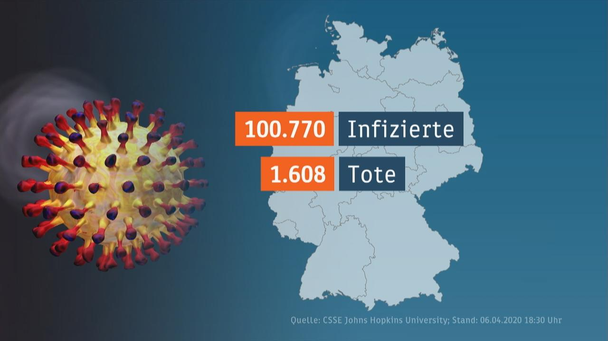
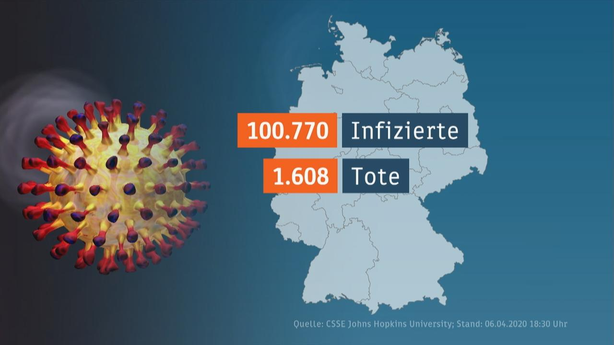

WEB.DE - E-Mail-Adresse kostenlos, FreeMail, De-Mail & Nachrichten
2021.04.15 19:49

Registrieren Alle Inhalte
Kostenlos registrieren
FreeMail
E-Mail-Adresse erstellen
WEB.DE Club
Mail App
MailDomain
netID
De-Mail
Cloud
Cloud-Speicher erweitern
Cloud App
Cloud für PC
Mobilfunk & DSL
All-Net-Tarife mit Smartphone
All-Net Ratgeber
Handytarif-Vergleich
DSL-Angebot
Energie
Strom
Gas
Energie-Ratgeber
News
Alle Themen von A-Z
Coronavirus
Regionales
Baden-Württemberg
Bayern
Berlin
Brandenburg
Bremen
Hamburg
Hessen
Mecklenburg-Vorpommern
Niedersachsen
Nordrhein-Westfalen
Rheinland-Pfalz
Saarland
Sachsen
Sachsen-Anhalt
Schleswig-Holstein
Thüringen
Politik
Brexit
Nahostkonflikt
Wahlen 2021
Politische Talkshows
US-Politik
Wirtschaft
Panorama
Panorama von A-Z
Feste & Events
Bestenlisten
Nachhaltigkeit
Geschenkideen
Haushalt
Urlaub
Finanzen & Versicherungen
Kosmetik
Outdoor
Multimedia
Spielzeug
Auto & Motorrad
Kleidung, Schuhe & Schmuck
Unterhaltung
Stars
Adel
TV & Streaming
Bares für Rares im ZDF
GNTM 2021
Die Höhle der Löwen
Let s Dance 2021
The Biggest Loser
DSDS 2021
Kino
Musik
Schlager
Lifestyle
Gaming
Internet
Kultur
Quiz
Comics
Singletreff
Partnersuche
Sport
Fußball
Bundesliga
Formel 1
Champions League
2. Bundesliga
Tennis
DFB-Pokal
Ratgeber
Gesundheit
Essen & Trinken
Auto & Mobilität
Digital
Reise
Beauty & Lifestyle
Kind & Familie
Liebe & Partnerschaft
Job & Gehalt
Finanzen & Verbraucher
Haus & Garten
Haustiere
Smartphones
Bonusprogramm
Haftpflichtversicherung
Wissen
Geschichte
Natur & Umwelt
Mensch
Wissenschaft & Technik
Weltraum
Mystery
Redewendungen & Sprichwörter
Gesundheit
BMI-Rechner
Abnehmen
Gesundheit von A-Z
Kolumnen
Webstorys
Infografiken
Service
Wetter
Horoskop
Routenplaner
BMI-Rechner
Ferientermine
Feiertage
Immobilien-Teilverkauf
Immobilienbörse
In eigener Sache
Einblick - Wie wir arbeiten
Benachrichtigungen
Zustimmungen
Jugendschutz
United Internet for UNICEF
Shop
Software & Mobile
Finanzen
Unterhaltung
WEB.Cent Bonusprogramm
Eigene Homepage
Musik-Streaming
TV-Streaming
Gymondo
Online-Sprachkurse
Readly
Shopping
Apps
Firefox Browser
Opera Browser
Mail App
Suche App
MailCheck
Versicherung
Versicherungsvergleich
Kfz-Versicherung
Zahnzusatzversicherung
Haftpflichtversicherung
Hausratversicherung
Risikolebensversicherung
Berufsunfähigkeitsversicherung
Cyberschutz
Lotto
6 aus 49
Eurojackpot
Spielgemeinschaften
GlücksSpirale
Games
Jackpot-Spiele
Pausen-Spiele
Simulations-Spiele
Strategie-Spiele
Abenteuer-Spiele
Rollenspiele
Action-Spiele
MillionenKlick
Gewinnspiel
Über WEB.DE
WEB.DE Hilfe
WEB.DE Newsroom
E-Mail & Cloud Briefankündigung Mobilfunk & DSL Strom Shop Lotto Versicherung WEB.Cent E-MailSachsen EU-Kommission Dänemark Corona-Pandemie Digital Sachsen
Warum wirbt Sachsens Ministerpräsident Kretschmer für den neuen Audi?
EU-KommissionSchwerer Fauxpas : Mitarbeiter von der Leyens schreibt an Staatschef
Video DänemarkGesundheitsbeamtin fällt nach Ankündigung über Astrazeneca-Verzicht in Ohnmacht
Live-Ticker Corona-PandemieDeutschland knackt Impfrekord: Fast 740.000 Dosen an einem Tag verabreicht
DigitalApple-Event am 20. April: Das könnte Tim Cook präsentieren
Galerie Bares für RaresNach Scherz abgerauscht: Bares für Rares -Experte ärgert Horst Lichter
Kein Paar mehrNun also doch: Jennifer Lopez und Alex Rodriguez haben sich getrennt
MusikBandshirt für fast 500 Euro: Rammstein bietet Fan-Artikel für stolze Summen an
GNTMRebecca Mir postet pikantes Babybauch-Bild – Fans: Wow!
WiederaufbauZwei Jahre nach dem verheerenden Brand: So steht es um Notre Dame
von Sander Rubens Essen und TrinkenNeuer Kaffee-Trend: So einfach können Sie den Proffee selbst zubereiten
vor 3 Stunden StarsLet s Dance -Teilnehmer Rúrik Gíslason posiert für Playboy -Sonderausgabe
Video GNTM15 Jahre GNTM: Welche Siegerin ist die Beliebteste?
Kolumne Borussia DortmundNach dem Champions-League-Aus des BVB: Charaktertest für Erling Haaland
Die Höhle der LöwenNach Ärger um Menstruationsprodukt: Ralf Dümmel entschuldigt sich für Deal
Wesel25-Jähriger gibt Führerschein bei der Polizei ab - und fährt mit Auto davon
StarsJasmin Herren in Tränen: Willis Familie sei schuld an Trennung
vor 4 Stunden Bares für RaresNach Scherz abgerauscht: Bares für Rares -Experte ärgert Horst Lichter
vor 2 Stunden Kein Paar mehrNun also doch: Jennifer Lopez und Alex Rodriguez haben sich getrennt
MusikBandshirt für fast 500 Euro: Rammstein bietet Fan-Artikel für stolze Summen an
GNTMRebecca Mir postet pikantes Babybauch-Bild – Fans: Wow!
Video Essen und TrinkenNeuer Kaffee-Trend: So einfach können Sie den Proffee selbst zubereiten
StarsLet s Dance -Teilnehmer Rúrik Gíslason posiert für Playboy -Sonderausgabe
Galerie Bares für RaresNach Scherz abgerauscht: Bares für Rares -Experte ärgert Horst Lichter
Kein Paar mehrNun also doch: Jennifer Lopez und Alex Rodriguez haben sich getrennt
MusikBandshirt für fast 500 Euro: Rammstein bietet Fan-Artikel für stolze Summen an
GNTMRebecca Mir postet pikantes Babybauch-Bild – Fans: Wow!
Essen und TrinkenNeuer Kaffee-Trend: So einfach können Sie den Proffee selbst zubereiten
vor 3 StundenWEB.DE E-Mail & Cloud
FreeMail PremiumMail Online-Speicher Apps WEB.DE Postfach-BlogWas ist eine Noreply-E-Mail ?
Noreply-E-Mails – was steckt dahinter und wer versendet diese E-Mails?
WEB.DE empfiehltApps für PC, Handy & Browser
WEB.DE Apps für Mail, Cloud, Cashback, Browser & Suche - geprüft & kostenlos.
WEB.DE PremiumE-Mail mit noch mehr Leistung
Mehr Speicherplatz, weniger Werbung & viele Rabatte bei unseren Partnern.
News
Politik Wirtschaft Regionales US-Politik Politische Talkshows USAUS-Regierung weist nach Hackerangriff zehn russische Diplomaten aus
Die USA werfen Russland einen großen Hackerangriff und Einmischung in die US-Wahlen vor. Jetzt antwortet Washington mit weitgehenden Sanktionen. Moskau kündigt eine scharfe Reaktion an. Was wird nun aus Bidens Treffen mit Putin?
vor 1 Stunde K-FrageKrimi um K-Frage in der Union: Erste Partei-Gruppierung stellt Ultimatum
vor 2 Stunden Interview Politiker im CheckKörpersprache: Was Angela Merkel besser kann als Sebastian Kurz
von Antonia Fuchs UkraineUkraine-Konflikt: Merkel und Biden fordern Abzug russischer Truppen
Coronavirus – Ratgeber & Hintergründe
Inzidenz in Ihrem Landkreis Corona-Live-Blog COVID-19 Impfungen Sieben-Tage-InzidenzCoronavirus: So ist die aktuelle Lage in Ihrem Landkreis
Corona-PandemieBesonders problematisch : Merkels Juristen sehen Bundes-Bremse kritisch
CoronavirusLassen mehr Corona-Tests die Inzidenz steigen?
von Arzu Dagci vor 4 Stunden CoronavirusNeue Studie: Corona-Mutante B.1.1.7 nicht tödlicher - dafür aber ansteckender
Service
HoroskopeSo stehen Ihre Sterne heute! Horoskop für alle Sternzeichen.
EuroJackpotStaatliches Lotto EuroJackpot: Die aktuellen Gewinnzahlen!
RoutenplanerDie beste Route für Ihre Reise - kostenlos und europaweit.
Wetter aktuell Regionale Nachrichten Daily Soaps aktuell BMI-Rechner Schulferien in DeutschlandUnterhaltung
Stars Adel TV & Streaming Bares für Rares GNTM 2021 Let’s DanceLet’s Dance -Star Auma Obama trauert um ihre Mutter
Erst vor wenigen Tagen hatte die Teilnehmerin der Tanzshow Let’s Dance den Tod ihrer in Kenia lebenden Großmutter bekannt gegeben, jetzt folgt der nächste Schicksalsschlag. Ihre Mutter ist gestorben.
vor 3 Stunden StarsWie Barbie-Puppe : Tochter von Katie Price völlig übertrieben geschminkt
vor 3 Stunden MusikSchlagersänger Ben Zucker hat sich mit Corona infiziert
TVJauch muss weiter in Quarantäne bleiben und fällt erneut bei TV-Show aus
vor 4 StundenVorteilswelt
Software & Mobile Finanzen UnterhaltungSport
Fußball Bundesliga 2. Bundesliga Formel 1 Tennis Kolumne Borussia DortmundDas nächste Juwel aus Dortmunds Talentschmiede steht bereit
Ich probier jetzt einfach was - das, was Ansgar Knauff nach dem Sieg der Borussia gegen den VfB Stuttgart ziemlich nüchtern beschrieb, hat bei den BVB-Fans am vergangenen Wochenende große Euphorie ausgelöst.
von Christopher Giogios vor 2 Stunden Olympia 2021Olympia steht auf der Kippe: Japans Regierung streitet über Spiele in Tokio
vor 4 Stunden Kolumne FußballWarum Flicks Wechselgedanken nachvollziehbar sind
von Steffen Meyer Champions LeagueSkandalös , bitter , ärgerlich : Umstrittener Strafstoß zerstört BVB-Traum
Empfehlungen der Redaktion
RoyalsDie Beerdigung von Prinz Philip im TV: Hier sehen Sie die Beisetzung live
WahlenAktuelle Umfragen zur Bundestagswahl: Union im Umfragetief - wer profitiert?
TVPromis unter Palmen 2021: Wann läuft Folge 2?
Promis unter PalmenPromis unter Palmen : Wer ist raus? Diese Kandidaten sind noch dabei
Video GNTMDeswegen ist Germany s next Topmodel -Kandidatin Romy wirklich ausgestiegen
GNTMGNTM 2021: Wer ist schon raus in Folge 10? Wer ist noch dabei?
Let s DanceWelches Paar ist bei Let s Dance bereits rausgeflogen?
Impfungen in DeutschlandDas ist der aktuelle Stand der COVID-19-Impfungen in den Bundesländern
GNTMHeidi Klum laufen die Kandidatinnen weg - Entscheidung der Modelmama überrascht
COVID-19Intensivbehandlung gegen COVID-19: Die aktuelle Auslastung der Intensivstationen
TVLet s Dance 2021: Das müssen Sie zur 14. Staffel der Tanzshow wissen
ESCAlle Lieder für den Eurovision Song Contest 2021 stehen fest
WEB.Cent Deals
PC & Gaming Mode & Schuhe Freizeit & Hobby Bis zu 10 % Cashback ReweBestellen Sie jetzt Ihren Corona Schnelltest einfach nach Hause und sichern Sie sich zusätzlich Cashback
Bis zu 8 % Cashback BAUR
Mit dem E-Bike Sale fit in den Frühling + Cashback sichern
Bis zu 3,5 % Cashback A.T.U.Winterreifen wechseln - schnell und günstig
Bis zu 8 % Cashback Home24Bereit für Gartenmöbel und Deko + Cashback
Bis zu 6 % Cashback Peter Kaiser50 % im Sale auf Schuhe + Cashback
Bestenlisten
Nachhaltigkeit Geschenkideen Haushalt Finanzen & Versicherungen Urlaub SportGarmin, Polar und Co.: Mit diesen Fitness- und Sportwatches bleiben Sie gesund
von Natalie Cada HaushaltFensterwischer, Glasreiniger & Co.: Die ideale Ausstattung zum Fensterputzen
von Natalie Cada HaareKurz, lang, dünn oder dick: Mit diesen Produkten bändigen Sie Ihr Haar
von Natalie Cada GesundheitKampf den Pollen: Gadgets gegen Allergien, Heuschnupfen & Co.
MultimediaSicher im Web: So schützen Sie Ihr Kind!
ErnährungRealistische Kochbücher: Mit wenig Aufwand lecker und gesund kochen
LiteraturLesen Sie sich munter! Besonders gesunde Ratgeberliteratur
Die Höhle der LöwenDie Höhle der Löwen -Produkte vom 5. April
FinanzenOnline Kreditvergleich - Jetzt zinsgünstige Kredite sichern!
KinderDie Welt verstehen: Die besten Experimentierkästen & Co. für Kinder
Kinder10 Ideen gegen aufkommende Langeweile zu Hause mit Kindern
Games
Jackpot-Spiele Pausen-Spiele Strategie Simulation Abenteuer Moorhuhn-Jagd Virtuelle Moorhuhnjagd!Moorhuhn-Shooter
Erleben Sie spannende Action mit dem Moohuhn Shooter und sahnen Sie fette Gewinne ab. Lassen Sie die Walzen glühen und knacken Sie die Jackpots!
König gesucht! Erschaffen Sie Großes!Forge of Empires
Spielen Sie in Forge of Empires Ihr eigenes Imperium, indem Sie das Sagen haben und Entscheidungen treffen, welche Sie mit Hilfe von Militäraktionen weit nach vorne bringen.
Zug- und Wirtschafts-Simulation Errichten Sie Ihr Zug-Imperium!Rail Nation
Bauen Sie Ihr Schienennetz aus, liefern Sie Ware in alle Welt, verbünden Sie sich mit anderen Spielern und bestreiten Sie spannende Wettbewerbe! Kostenlos und online!
Strategie-Hit Erleben Sie Strategie pur!Goodgame Empire
Sie können alleine spielen oder Verbündete suchen, um ein Wirtschaftssystem zu erschaffen, eine schlagkräftige Armee auszuheben und eine Festung zu errichten.
Simulation Die virtuelle Jagd-Simulation!Wild Hunt
Die virtuelle Jagd-Simulation entführt Sie zu den bekanntesten Jagdgebieten auf der ganzen Welt. Spielen Sie einfach so oder treten Sie gegen andere Spiele in Turnieren an.
20€ Bonuspaket! Echtzeit-StrategieSupremacy 1914
Treten Sie gegen bis zu 499 echte Spieler an, um in Echtzeit in historischen Schlachten und fiktiven Szenarien um die Vorherrschaft mit Ihren Truppen zu kämpfen.
Top Games
1 TOP: Errichten Sie Ihr Zug-Imperium!Rail Nation: Die ultimative Wirtschafts-Simulation!
2 Für Strategie-Fans!Elvenar: Das wunderschöne Fantasy Strategie-Aufbauspiel!
3 Das beliebte Online-Kartenspiel!Solitaire 95: Spielen Sie kostenlos den Retro-Hit!
4 Die virtuelle Jagd-Simulation!Wild Hunt: Waidmannsheil, gehen Sie auf virtuelle Jagd!
Ratgeber
Auto & Mobilität Digital Reise Job & Gehalt Essen & Trinken Haus & Garten Liebe & Partnerschaft Finanzen & Verbraucher Haustiere Kind & Familie GesundheitImmer mehr, immer fettiger: Wie uns Corona zu Stress-Essern macht
von Petra Maier Luca-AppFür Überprüfung: Macher der Luca-App stellen Programmcode komplett online
CoronavirusKeine falschen Ergebnisse: Diese Fehler sollte man beim Corona-Test vermeiden
Wissen
Geschichte Natur & Umwelt Mensch Wissenschaft & Technik Weltraum WeltraumSo entstehen die rätselhaften Mars-Spinnen auf dem Roten Planeten
Auf dem Mars sind vor allem am Südpol große spinnenartige Gebilde zu finden. Bislang gab es allerdings nur Vermutungen, wie diese entstehen könnten. Nun wurde die gängige Hypothese bestätigt.
von Franziska Fleischer TiereBei Mama im Beutel: Video eines Känguru-Babys geht viral
WeltraumFeuerkugel über Florida: Meteor verglüht am Himmel
NASAPerseverance schießt ein Selfie auf dem Roten Planeten
Panorama
Wetter aktuell Feste & Events Panorama A-Z DüsseldorfVersuchter Mord und Schießereien: NRW-Ministerium verbietet Bandidos
Notre DameMacron: Zeitplan beim Wiederaufbau von Notre Dame wird eingehalten
PanoramaGebäck des Grauens: Vermeintlich gefährliches Tier entpuppt sich als Backware
Unsere Kolumnen
Gabor Steingart Wolfram Weimer Pit Gottschalk Marie von den Benken Rolf Schwartmann Kolumne PandemiebekämpfungFreiheit gegen Daten: Gibt es Alternativen zur Luca-App?
von Rolf Schwartmann vor 4 Stunden Kolumne PandemiebekämpfungFreiheit gegen Daten: Das sind die Stärken und Schwächen der Luca-App
von Rolf Schwartmann vor 4 Stunden Kolumne FaktencheckIst der digitale grüne Corona-Nachweis ein EU-Impfpass?
von CORRECTIV-Faktencheck, S. Thust Kolumne BundestagswahlMarkus Söder will Franz-Josef Strauß Coup von 1979 wiederholen
von Wolfram WeimerUnited Internet for UNICEF
Einmalig spenden UNICEF-Pate werden Oster-AktionKambodscha: Kinder vor Gewalt schützen
von Tessa Page Interview Corona-PandemieSchulschließungen und Ungleichheit: Bildungssituation gefährdet Millionen Kinder
von Susanne Stocker WeltwassertagJedes 5. Kind weltweit hat nicht genug Wasser
NewsletterAbonnieren Sie den Newsletter der Stiftung!
Comics
Aktuelle KarikaturenNachrichten sind langweilig und dröge? Es kommt auf den Blickwinkel an
vor 2 Stunden Perscheids absurde WeltIn den Cartoons von Martin Perscheid tun sich Abgründe auf
795 Kommentare Neue Abenteuer in der Tundra!Chad Carpenters Comics zeigen die Wildnis von ihrer komischen Seite
Gesundheit
GesundheitSeit Corona-Pandemie: Junge Menschen trinken und rauchen deutlich mehr
66 Kommentare GesundheitWarum Sport während der Schwangerschaft so wichtig ist
Gefühle im LockownMütend : Warum die Krise viele Menschen zunehmend aggressiv macht
GesundheitWirken die Medikamente wie sie sollen?
Politik
Politik A-Z Bundestagswahl 2021 Politische Talkshows Interview K-Frage der UnionPolenz: Dann hätte Söder im Bundestagswahlkampf keine Chance
von Denis Huber KanzlerkandidaturWer macht den Kanzler? Politologe liest zwischen den Zeilen
von Marie Illner 539 Kommentare Interview Europäisches WährungssystemWas war das für ein Drama : Waigel über komplizierte Namensfindung des Euros
von Marie Illner Kanzlerkandidat der UnionK-Frage: Warum Söder das Rennen noch lange nicht für sich entschieden hat
von Denis Huber 389 KommentareWirtschaft
Wirtschaft A-Z SupermarktDie Webseite von Real zieht nach Verkauf um
GeschichteSpannende Euro-Fakten: Wer ihm den Namen gab und wie er noch hätte heißen können
WirtschaftDas Geld wird weniger, statt mehr: Immer mehr Banken erheben Strafzinsen
30 Kommentare DatenschutzWas die Schufa von Ihnen weiß - und was ihr Verkauf in die USA für Folgen hätte
von Marie IllnerIn eigener Sache
Wie wir arbeiten Benachrichtigungen FreeMail In eigener SacheDeutsche Post, GMX und WEB.DE liefern Briefinhalte auf Wunsch per E-Mail
Wie wir arbeitenWie stellen wir sicher, dass unsere Inhalte stimmen?
von Merja Bogner Wie wir arbeitenWie wir unser News-Angebot finanzieren
von Thomas Rebbe Wie wir arbeitenEinblicke in die tägliche Arbeit unserer Redaktion
Hilfe & KontaktHilfestellung & Anleitung zu Ihrem WEB.DE E-Mail Konto
KundencenterIhre Daten und Sicherheits-Einstellungen verwalten
Passwort vergessenAltes Passwort zurücksetzen und ein neues anlegen
PrivatsphäreAlle Informationen zum Datenschutz bei WEB.DE
Produkte Strom + Gas E-Mail kostenlos De-Mail DSL-Angebot Handytarif-Vergleich WEB.DE Handytarife McAfee Virenschutz ADAC Internet-Browser Eigene Homepage SMS & Co. Apps & mehr MailCheck Strompreis-Vergleich TV-Streaming WEB.DE Tipp WEB.DE Add-On Magazin-Flatrate Film-Flatrate Musik-Flatrate Sprachen lernen Kfz-Vergleich Suche für Windows Themen News Sport Unterhaltung Ratgeber Auto Comics Services Lotto Immobilien-Teilverkauf Partnersuche Immobilienbörse Singletreff Feiertage MillionenKlick BMI-Rechner Games Gewinnspiel Shopping Preisvergleich WEB.Cent Kreditkarten Vorteilswelt Gutscheincodes Brillen & Kontaktlinsen ADAC Plus-Mitgliedschaft WEB.Cent WEB.DE Bonusprogramm Top-Angebote Alle Shops A-Z LIDL & WEB.Cent OTTO & WEB.Cent Douglas & WEB.Cent Tchibo & WEB.Cent Partner Partnersuche Singletreff OTTO Amazon.de Alba Moda Bonusprogramm LoveScout24 Parship Immobilienbörse Douglas bonprix WENZ MONA Ulla Popken Baur Lidl KLINGEL eBay Sitemap Impressum AGB Datenschutz Jugendschutz Presse Jobs Werbung E-Mail Angebot Nützlich Aktuell News Wir haben aktuelle News für Sie Homepage aktualisieren Das könnte Sie auch interessieren Bares für RaresNach Scherz abgerauscht: Bares für Rares -Experte ärgert Horst Lichter
vor 2 Stunden Kein Paar mehrNun also doch: Jennifer Lopez und Alex Rodriguez haben sich getrennt
MusikBandshirt für fast 500 Euro: Rammstein bietet Fan-Artikel für stolze Summen an
GNTMRebecca Mir postet pikantes Babybauch-Bild – Fans: Wow!
Video Essen und TrinkenNeuer Kaffee-Trend: So einfach können Sie den Proffee selbst zubereiten
Nicht mehr anzeigen
- Onlinewahn, lustige Bilder, Fun Satire Rätsel und Funseiten
Dateianhänge mit Gmail-Nachrichten versenden Sie können Ihren E-Mails Anhänge wie Dateien oder Fotos hinzufügen. Große Dateien, die die Größenbeschränkung übersteigen (wie z. B. Videos), können Sie aus Google Drive einfügen.
- Welcome - ImmobilienScout24
Wetter, Wettervorhersage, Reisewetter von www.wetterbote.de. Wetter weltweit, Deutschlandwetter, Europawetter, Reisewetter - Wetter als Wettervorhersagen, Wetter ...
- Handelsblatt - Nachrichten aus Finanzen, Wirtschaft plus ...
Online-Bereich der Salzburger Tageszeitung. Bietet aktuelle Nachrichten in verschiedenen Sparten aus Salzburg und aller Welt.
- Freemail
We would like to show you a description here but the site won’t allow us.
- magnus mineralbrunnen
Der NDR macht Nachrichten in Leichter Sprache. Diese Nachrichten sind aus Nord·deutschland. Hier können Sie diese Nachrichten lesen. Und hören.
- nachrichten.de
In unseren News, gibt's unsinnige Nonsens-Nachrichten, Spass-Meldungen und politische Satire. Bei unseren Flashmobs gibt's Unfug zum Mitmachen. Bei den Downloads gibt's lustige Videos kostenlos zum downloaden, saukomische Sketche, sinnfreie Telefonverarschungen und weitere Fundownloads, z.B. das lustiges Video von der WM.
- google mail
Top Rubriken: Nachrichten, Finanzen, Sport, Unterhaltung, Geniessen, Essen und Trinken.
- eBay
Allianz der Defensive - Was Tokio und Berlin verbindet finanzen.net | 06.02.2019 | 07:47 - von Andreas Rinke Tokio (Reuters) - An Selbstbewusstsein fehlt es Shinzo Abe nicht: "Auf Japan und Deutschland kommt eine immer größere Verantwortung für die Stabilität und den Wohlstand der ...
- WebUntis
Garten: Tulpenmagnolie: Einer der auffälligsten Blütenbäume des Frühjahrs ist die üppig blühende Tulpenmagnolie. Die aufrecht stehenden, weißrosa Blüten erinnern ein wenig an Tulpen. Neben dieser prachtvollen Hybride sollte man aber die ebenso eindrucksvollen anderen Magnolien-Arten nicht vergessen, zum Beispiel die weißblühende Baummagnolie, die Sternmagnolie mit ihren schmalen ...
- google news
Heutige Nachrichten. Heute 10.04.2021. BG, BRG, BORG Kapfenberg. Schule wechseln. WebUntis Login. Office 365 Anmeldung OIDC Anmeldung. oder. Benutzername. Passwort. Login. Passwort vergessen? Untis mobil (öffnet in neuem Tab) (öffnet in neuem Tab)
Dateianhänge mit Gmail-Nachrichten versenden Sie können Ihren E-Mails Anhänge wie Dateien oder Fotos hinzufügen. Große Dateien, die die Größenbeschränkung übersteigen (wie z. B. Videos), können Sie aus Google Drive einfügen.
Wetter, Wettervorhersage, Reisewetter von www.wetterbote.de. Wetter weltweit, Deutschlandwetter, Europawetter, Reisewetter - Wetter als Wettervorhersagen, Wetter ...
Online-Bereich der Salzburger Tageszeitung. Bietet aktuelle Nachrichten in verschiedenen Sparten aus Salzburg und aller Welt.
We would like to show you a description here but the site won’t allow us.
Der NDR macht Nachrichten in Leichter Sprache. Diese Nachrichten sind aus Nord·deutschland. Hier können Sie diese Nachrichten lesen. Und hören.
In unseren News, gibt's unsinnige Nonsens-Nachrichten, Spass-Meldungen und politische Satire. Bei unseren Flashmobs gibt's Unfug zum Mitmachen. Bei den Downloads gibt's lustige Videos kostenlos zum downloaden, saukomische Sketche, sinnfreie Telefonverarschungen und weitere Fundownloads, z.B. das lustiges Video von der WM.
Top Rubriken: Nachrichten, Finanzen, Sport, Unterhaltung, Geniessen, Essen und Trinken.
Allianz der Defensive - Was Tokio und Berlin verbindet finanzen.net | 06.02.2019 | 07:47 - von Andreas Rinke Tokio (Reuters) - An Selbstbewusstsein fehlt es Shinzo Abe nicht: "Auf Japan und Deutschland kommt eine immer größere Verantwortung für die Stabilität und den Wohlstand der ...
Garten: Tulpenmagnolie: Einer der auffälligsten Blütenbäume des Frühjahrs ist die üppig blühende Tulpenmagnolie. Die aufrecht stehenden, weißrosa Blüten erinnern ein wenig an Tulpen. Neben dieser prachtvollen Hybride sollte man aber die ebenso eindrucksvollen anderen Magnolien-Arten nicht vergessen, zum Beispiel die weißblühende Baummagnolie, die Sternmagnolie mit ihren schmalen ...
Heutige Nachrichten. Heute 10.04.2021. BG, BRG, BORG Kapfenberg. Schule wechseln. WebUntis Login. Office 365 Anmeldung OIDC Anmeldung. oder. Benutzername. Passwort. Login. Passwort vergessen? Untis mobil (öffnet in neuem Tab) (öffnet in neuem Tab)
 
